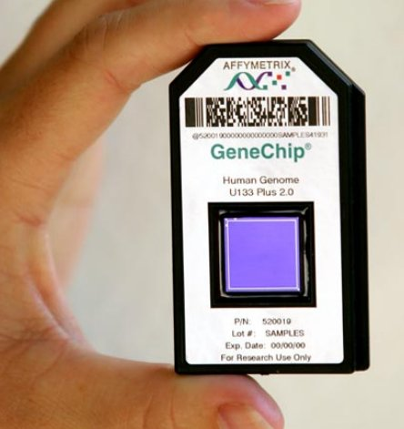
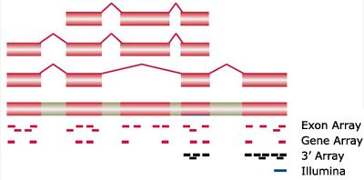
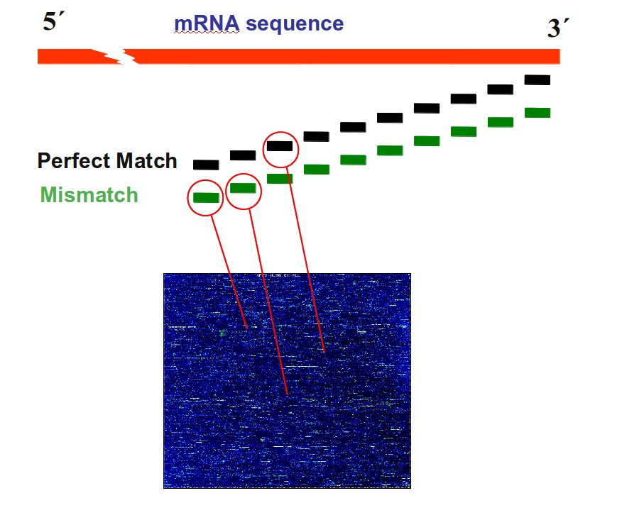

Your browser doesn't support the features required by impress.js, so you are presented with a simplified version of this presentation.
For the best experience please use the latest Chrome, Safari or Firefox browser.
Inserm U1090/TAGC
Press F11 for full screen
Technology |
 |
Probes |
 |
Mismatch and perfect match |
 |
The most popular algorithm for Affymetrix data normalization
Motivations
Procedure